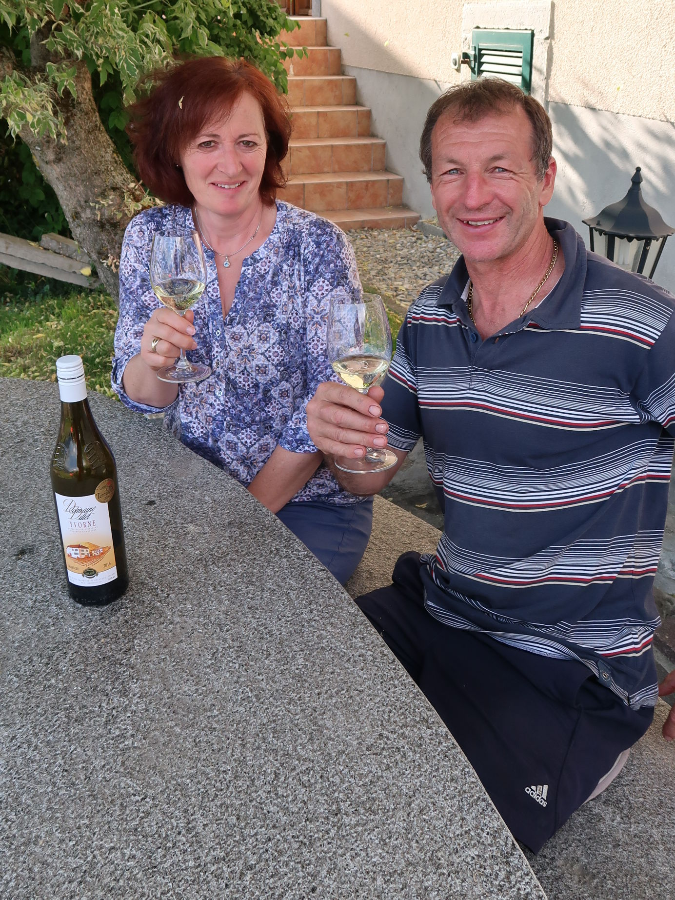

le vigneron
après un repas avec un ami vigneron alors qu’on pedzait et batoillait, le cuisinier maître des lieux nous rejoint et dans ces joutes oratoires, lâcha le nom d’eric minod, vigneron à yvorne
trois jours plus tard et un « emil », je le rencontrais dans sa cave
c’est pas en ville que tu vas croiser un gaillard comme lui, comme eric minod
il exploite le domaine familial avec son épouse et ses enfants
simplement, il fait des vins pour lui, pour toi, pour le plaisir, savoureux qui plaisent au palais et qui remplace bien le lait
il en est fier et il a de quoi l’être
déguster
chasselas 2016
à la première lampée tu sais que t’es à yvorne
le fruit te titille la langue par sa fraîcheur et une pointe de minéralité qui bonifie l’harmonie de ce vin
de l’apéro ou avec les filets de perches du léman du restaurant du torrent
ne te précipite pas de boire le 2016 car l’yvorne supporte bien les années, profite des anciens millésimes, même les 2000 qui te surprendront par leur maturité et leur élégance
œil de perdrix 2016
un rayon de soleil qui enchantera tes apéros et même tes grillades
yvorne spécialité 2015 – 2016
(assemblage de pinot gris, chardonnay et pinot blanc – élevé en barrique)
fruité, élégant et un goût original qui te flatte le gosier
se marie parfaitement avec une cassolette de bolets
découvrir
gamay vielles vignes 2015
les quarante-cinq ans de ces vignes inspirent le respect
un grand vin, rond, plaisant et un rien enchanteur qui t’oblige vite à faire appel à une petite sœur et qui ne craint pas un wellington
qui ?
Domaine Dillet
Éric Minod
Les Renauds 1
1853 Yvorne
024 466 53 89 – 079 329 65 78 - info@yvornedillet.ch - www.yvornedillet.ch
y aller
quand tu vas de villeneuve à aigle, tout à coup sur ta gauche, au pied de la montagne il y a un magnifique village entouré de vignobles
c’est yvorne
par l’autoroute tu prends la sortie aigle et tu suis la route jusqu’au rond-point après les feux que tu passes au vert
là tu prends à gauche direction villeneuve et tu trouveras un panneau blanc indiquant yvorne – corbeyrier à droite
tu montes cette petite route limitée de chaque côté par des vignes et sur la place du village tu tournes à gauche et tu te trouveras en face d’une façade sur laquelle il est inscrit domaine dillet
le resto
Restaurant du Torrent
Claude Philipona
Place du Torrent
1853 Yvorne
024 534 56 97 - http://www.restaurant-le-torrent.ch
sympa
quand la récolte est abondante comme en 2016 et que ses plants de doral sont beaux, éric les laisse mûrir sur pied et le 14 février 2017 il les a récoltés, puis mis en barrique
tu pourras déguster ce nectar en 2019 !